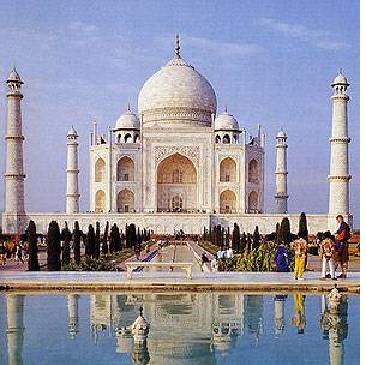

Khi các tôn giáo Ấn Độ vượt biên giới và các eo biển mà truyền qua Tích Lan, Java, Cao Miên, Thái Lan, Miến Điện, Tây Tạng, Khotan, Turkestan, Mông Cổ, Trung Hoa, thì nghệ thuật Ấn cũng lan tràn theo vào các xứ đó[1]. “Ở châu Á, con đường nào cũng xuất phát từ Ấn Độ”[2]. Người Ấn từ thung lũng sông Gange tiến xuống chiếm đảo Tích Lan ở thế kỉ thứ V trước Công nguyên. Hai trăm năm sau, vua Açoka sai một hoàng tử và một công chúa qua đó truyền bá đạo Phật. Mặc dầu phải chống cuộc xâm lăng của dân tộc Tamil[3], trong mười lăm thế kỉ mà dân Tích Lan vẫn bảo tồn được nền văn minh phong phú của họ cho tới khi bị người Anh chiếm năm 1815.
Về kiến trúc Tích Lan, mới đầu xây cất những dagoba, tức những điện thờ mái tròn như các stupa ở phương Bắc, sau họ mới dựng những ngôi đền lớn như các đền hoang tàn tại cố đô của họ, Anuradhapura; họ cũng đục được những tượng Phật đẹp nhất và vô số nghệ phẩm khác. Sau công cuộc xây cất “Đền Răng Phật” ở Kandy, dưới triều đại vương cuối cùng của Tích Lan, vua Kirti Shri Raja Singha, họ không tạo được công trình nào lớn lao nữa. Kế đó họ mất độc lập, giới quí tộc suy tàn và không còn bọn người giàu có, hiểu nghệ thuật, khuyến khích, bảo hộ nghệ sĩ nữa.
°
Thật đáng lấy làm lạ, ngôi chùa Phật lớn nhất – có vài nhà chuyên môn còn cho là ngôi đền lớn nhất thế giới nữa – không phải ở trên đất Ấn mà ở trên đảo Java. Thế kỉ thứ VIII, triều đại Shailendra ở Sumatra chiếm được đảo Java, đưa đạo Phật lên thành quốc giáo, bỏ tiền ra xây cất ngôi chùa vĩ đại Borobudur (nghĩa là Chùa Nhiều Phật)[4]. Ngôi chùa chính nhỏ thôi, có một cách bố trí khá đặc biệt - ở giữa là một stupa nhỏ mái tròn, chung quanh có bảy mươi hai cái topa sắp theo hình những vòng tròn đồng tâm. Nếu chỉ có bấy nhiêu thì chùa
°
Chỉ có mỗi một đền Ấn là vĩ đại hơn chùa
Đầu kỉ nguyên, miền của bán đảo Đông Dương mà ngày nay người ta gọi là Cao Miên, gồm những thổ dân Khambuja (hoặc Khmer), gốc gác phần lớn là Trung Hoa, phần nhỏ là Tây Tạng. Khi Chu Đạt Quan (Tcheou-Ta-Kouan), sứ thần Kublai Khan (Hốt Tất Liệt) lại kinh đô Khmer, tức Angkor Thom, thì thấy chính quyền xứ đó vững vàng, dân chúng sung túc nhờ siêng năng và nhờ trồng lúa.
Ông ta kể rằng vua Khmer có năm bà hoàng hậu: “một bà chính cung và bốn bà ở bốn cung: đông tây nam bắc”, thêm bốn ngàn cung tần mĩ nữ nữa hầu hạ trong các công việc khác. Vàng bạc, châu báu rất nhiều; du thuyền qua lại trên hồ; phố xá ở kinh đô đầy xe cộ, kiệu phủ rèm, voi cưỡi trang sức rực rỡ, dân số tới một triệu. Đền nào cũng có nhà thương đủ y sĩ và nữ y tá.
Mặc dầu dân gốc Trung Hoa mà văn minh lại gốc Ấn Độ. Mới đầu họ thờ rắn thần Naga đầu bạnh ra như cái quạt, hình rắn đó, ở đền chùa, cung điện nào cũng thấy, rồi sau họ thờ ba vị thần Brahma, Vichnou, Shiva ở Ấn Độ do Miến Điện truyền qua; cũng gần như đồng thời, đạo Phật xuất hiện và Phật Tổ với Vichnou, Shiva được người Khmer tôn sùng nhất. Trên đá còn ghi những số lượng vĩ đại gạo, bơ, và các thứ dầu quí mà dân chúng mỗi ngày cúng dường các tu sĩ.
Cuối thế kỉ thứ IX, người Khmer xây cất đền Bayon để thờ thần Shiva, đền đó là một trong những ngôi cổ nhất còn lại, nhưng nay đã bị cây cối bao phủ và thành hoang tàn[6]. Trong một ngàn năm, các phiến đá chỉ chồng lên nhau chứ không có hồ, rời rã, nghiêng đổ, mà hình Brahma và Shiva ở trên các tháp, chỉ còn là những bộ mặt to lớn, nhăn nhó, không còn một nét thần linh nào cả. Ba thế kỉ sau, bọn nô lệ của nhà vua và tù binh xây dựng đền Angkor Wat, một công trình kiến trúc có thể so sánh được với công trình đẹp nhất của Ai Cập, Hi Lạp, và những giáo đường đẹp nhất thời Trung cổ. Chung quanh ngôi đền là một cái hào vĩ đại, dài gần hai chục cây số, có một cái cầu lát đá bắc qua hào, hai bên là những hình rắn Naga coi thấy ghê, qua cầu rồi thì tới một bức tường thành trang hoàng rất đẹp, rồi tới những dãy hành lang rộng chạm nổi những chuyện kể trong anh hùng ca Mahabharata và Kamayana; sau cùng tới ngôi đền, uy nghi trên một cái bệ rộng có những bậc thang đưa lên, càng lên cao bệ càng hẹp lại, như hình kim tư tháp, lên tới chót vót, ở trên cao sáu chục mét, là vô điện thờ. Ngôi đền kích thước đồ sộ như vậy mà không thô, trái lại vẫn đẹp, có một vẻ lộng lẫy mà uy nghi, làm cho du khách phương Tây tưởng tượng được một phần nào – rất nhỏ thôi – tính cách hùng tráng của văn minh cổ phương Đông. Ta tưởng tượng đám dân chúng trong kinh đô, đám nô lệ tập hợp lại, kẻ đẽo, đập, người kéo, bứng những phiến đá nặng, và bọn thợ chạm nổi, đục thành tượng, thủng thẳng, kiên nhẫn như thể có cả một thời gian vô cùng để sống; các tu sĩ đi qua đi lại, rầy mắng, an ủi; các devadasi (còn hình trên các phiến đá hoa cương) an ủi lại các tu sĩ; giới quí tộc xây những cung điện có bệ rộng mênh mông rực rỡ, như điện Phinean-Akas; và ở trên cả đám người đó, do công lao của họ, các ông vua hùng cường, tàn nhẫn được đề cao, quyền uy lớn thêm, ngang với thần thánh.
Các ông vua đó, cần dùng nhiều nô lệ, tất thích gây chiến. Họ thường chiến thắng, nhưng vào cuối thế kỉ XIII – khoảng “giữa đường đời” của Dante[7] – đạo quân Xiêm thắng quân Khmer, tàn phá châu thành của họ và các đền đài, cung điện rực rỡ của họ hoá ra hoang tàn. Ngày nay, thỉnh thoảng có vài du khách thơ thẩn giữa những đống đá ngổn ngang đó, ngạc nhiên rằng sức cây cối sao mà mạnh thế, cành và rễ nó len lỏi vào những khe đá, những chỗ rạn nứt trên tường mà làm cho các phiến đá rã rời ra, đổ sụp. Có gì đâu? Chỉ vì đá không có thị dục và không thể lớn lên được.
Chu Đạt Quan nhắc tới nhiều cuốn sách do người Angkor viết, nhưng ngày nay thất lạc hết, không còn lấy một trang; cũng như chúng ta, các văn sĩ thời đó viết những tư tưởng có thể bị huỷ diệt trên một chất cũng dễ bị huỷ diệt, và tất cả những vị “bất tử” của họ nay đã chết hết rồi. Những hình chạm nổi rất đẹp ở đền
°
Ở Xiêm, một xứ sát nách, một dân tộc gốc nửa Trung Hoa, nửa Tây Tạng, lần lần đuổi được bọn xâm lăng Khmer và dựng được một nền văn minh chịu ảnh hưởng nghệ thuật và tôn giáo Ấn. Sau khi thắng người Cao Miên rồi, họ dựng một kinh đô mới, Ayuthia, trên nền cũ của một thị trấn Khmer. Họ mở mang lần lần đất đai và khoảng 1.600, đế quốc của họ gồm miền Nam Miến Điện, Cao Miên và bán đảo Mã Lai. Họ thông thương với Trung Hoa ở phía Đông và tới cả châu Âu ở phía Tây. Nghệ sĩ của họ tô điểm các sách chép tay, tô màu bằng sơn vẽ lên gỗ, nung các đồ sứ theo cách Trung Hoa, thêu trên lụa rất khéo, và đôi khi tạc những tượng rất đẹp nữa. Rồi theo cái luật tuần hoàn rất vô tư của lịch sử, người Miến Điện lại qua chiếm kinh đô Ayuthia của Xiêm, tàn phá hết, không còn lưu lại một công trình mĩ thuật nào cả. Tại kinh đô mới ở
°
Người Miến Điện đáng được coi là một trong những dân tộc giỏi xây cất nhất ở châu Á. Từ Mông Cổ và Tây Tạng tới, họ gặp ngay một miền phì nhiêu, định cư, định quốc danh là Miến Điện, chịu ảnh hưởng của văn minh Ấn Độ, và từ thế kỉ thứ V sản xuất được nhiều bức tượng thờ Phật, thờ Vichnou, thờ Shiva, xây cất được nhiều stupa, đẹp nhất là ngôi đền uy nghi Ananda – một trong năm ngàn ngôi đền ở Pagan, cố đô của họ.
Pagan bị Kublai Khan cướp phá, vơ vét, và trong năm trăm năm, chính quyền Miến Điện lang thang từ kinh đô này tới kinh đô khác. Có một thời gian, Mandalay là trung tâm của dân tộc Miến và một phong trào nghệ thuật sản xuất được nhiều thứ rất đẹp, từ đồ thêu, đồ nữ trang, tới những đồ gỗ chạm trổ rất khéo léo trong hoàng cung, mà ai cũng biết rằng đục gỗ phải nhẹ tay lắm, nó dễ nứt, dễ bể, chứ không như đá. Người Anh lấy cớ rằng các nhà truyền giáo và thương nhân của họ bị ngược đãi, xâm chiếm Miến Điện năm 1886 và dời kinh đô lại Rangoon ở gần biển để cho Hải quân Anh dễ làm cái nhiệm vụ bình định hơn. Người Miến đã xây cất ở đó một trong những điện thờ đẹp nhất của họ, tức ngôi chùa danh tiếng Shwe Dagon, dát toàn vàng, thu hút mỗi năm hàng triệu phật tử hành hương trong nước. Chùa chẳng chứa tóc của chính Đức Thích Ca Mâu Ni đấy ư?
3. KIẾN TRÚC HỒI
Kiểu thức A Phú Hãn – Kiểu thức Mông Cổ -
Dưới các triều đại Mông Cổ, kiến trúc Ấn thành công nhất. Các tín đồ Mahomet, bất kì ở đâu: Grenade, Le Caire, Jérusalem hay Bagdad, cũng đã tỏ ra là những nhà xây cất cừ khôi; vì vậy ta không lấy làm lạ rằng khi đã làm chủ nhân ông ở Ấn rồi, họ dựng ngay trên đất họ mới xâm chiếm, những thánh đường Hồi giáo đẹp không thua thánh đường Omar ở Jérusalem, đồ sộ không thua thánh đường Hassan ở Le Caire, thanh nhã không thua thánh đường Alhambra ở Grenade. Phải nhận rằng mới đầu họ dùng thợ thủ công Ấn Độ, phỏng theo các chủ đề Ấn, bắt chước cả kiểu cột trụ Ấn nữa, cho nên nhiều thánh đường Hồi giáo, trong buổi đầu chỉ như những đền Ấn xây cất lại làm chỗ cầu nguyện cho tín đồ Hồi. Nhưng chẳng bao lâu họ[8] bỏ khuynh hướng mô phỏng đó đi và ta thấy xuất hiện một kiểu thức hoàn toàn Hồi, tới nỗi du khách phải ngạc nhiên sao mà lăng Taj Mahal lại xây cất trên Ấn Độ, nó ở Ba Tư, Bắc Phi hay Y Pha Nho mới hợp chỗ chứ.
Ngôi tháp diễm lệ Kutb-Minar[9] đánh dấu sự chuyển tiếp giữa hai phái đó. Nó là một bộ phận của một thánh đường do Kutbu-d-Din Aibak cho xây cất ở cựu Delhi để ghi công thắng Ấn của ông vua Hồi khát máu đó; người Hồi đã lấy những thành phần rời rạc của hai mươi bảy ngôi đền Ấn, ráp lại mà dựng nên. Sau bảy thế kỉ dãi dầu mưa nắng, ngôi tháp vĩ đại cao bảy mươi sáu mét đó – xây dựng bằng một thứ sa thạch (grès) đỏ rất đẹp, kích thước rất cân đối, tầng trên cùng toàn bằng cẩm thạch trắng – hiện nay vẫn được coi là một trong những công trình kiến trúc nghệ thuật bất hủ của Ấn. Thường thường các vua Hồi ở Delhi chỉ mãi tàn sát dân Ấn, ít có thì giờ nghĩ tới kiến trúc, và hầu hết những công trình còn lại đều là những lăng tẩm họ cho xây cất từ hồi họ còn sống để rán quen cái thân phận có-sinh-thì-có-tử như ai của họ. Một trong số những kiến trúc đẹp nhất còn lại là lăng vua Shershah ở Sasseram, miền Bijaz; to lớn, nặng nề, lăng đó đánh dấu giai đoạn cuối cùng của kiểu thức hùng tráng của người Maure [tức Hồi ở Bắc Phi, Y Pha Nho…], khác xa cái kiểu thức chạm trổ tỉ mỉ như đồ châu báu của thời các vua Mông Cổ.
Vua Akbar có tinh thần chiết trung, khuyến khích sự dung hoà kiến trúc Hồi với kiến trúc Ấn, và các công trình mà các kiến trúc sư xây cất cho ông dung hoà các phương pháp và các kiểu Ba Tư và Ấn Độ, thành một toàn thể điều hoà, đẹp đẽ tượng trưng cho sự hoà đồng – không được lâu bền – các tín ngưỡng Hồi và Ấn, đúng theo tinh thần của thứ tôn giáo tổng hợp của Akbar. Công trình kiến trúc đầu tiên trong triều đại ông, tức cái lăng ông bảo xây ở gần
Vua Jehangir không làm cho ngành kiến trúc của dân tộc ông tiến thêm được bước nào, nhưng con của ông, vua Jehan vì mê xây cất các cung điện đẹp mà nổi danh cũng gần bằng Akbar. Jehangir rộng rãi với các sủng phi bao nhiêu thì Jehan rộng rãi với các nghệ sĩ bấy nhiêu. Cũng như các vua ở Bắc Âu, ông cho vời các nghệ sĩ ở Ý tới dạy cho thợ thủ công Ấn nghệ thuật nhận bảo thạch vào đá hoa cương thành một thứ đồ khảm nhiều màu, đó là kiểu trang hoàng chính yếu dưới triều đại ông. Jehan không có tinh thần tôn giáo, vậy mà ông cũng sai xây cất những thánh đường đẹp nhất của Ấn Độ, thánh đường Juma Masjid, tức thánh đường Ngày thứ sáu (trong tuần) ở Delhi, và thánh đường Moti Masjid, tức thánh đường Trân Châu ở Agra.
Ở
Đây là chính điện, chỗ nhà vua thiết triều, rực rỡ những bức khảm theo kiểu Florence trên một nền cẩm thạch đen; trần, cột và cửa tò vò đều chạm trổ như một bức ren, có một vẻ đẹp mảnh mai không sao bắt chước nổi; đây là điện riêng của nhà vua mà trần dát vàng và bạc, cột chạy những đường chỉ cẩm thạch, cửa tò vò hình bán nguyệt hơi nhọn ở trên và gồm nhiều bán nguyệt nhỏ coi như bông hoa; ngai vàng trang hoàng hình con công, nổi tiếng khắp thế giới; tường nhận bảo thạch thành những chữ ghi những lời tự đắc này của một thi sĩ Hồi: “Nếu có một cảnh thiên đường ở cõi trần này thì cảnh đó ở đây, ở đây, ở đây!”. Ta có thể có một ý niệm phỏng chừng về sự phong phú của “Ấn Độ dưới triều các Mogol”, khi nghĩ rằng, theo lời sử gia lớn nhất về kiến trúc[10] thì cung điện ở Delhi chiếm một diện tích rộng gấp hai lâu đài vĩ đại Escurial[11], và đương thời rực rỡ, nó được coi là “cung điện đẹp nhất phương Đông, có lẽ nhất thế giới nữa”[12].
Thành Agra nay đã đổ nát[13] và chúng ta chỉ có thể đoán phỏng chừng thời huy hoàng nó ra sao thôi. Hồi xưa, ở giữa vườn ngự uyển, có điện (mái tròn) Trân Châu, điện Bảo Ngọc, chính điện và điện riêng của nhà vua, ngọc điện (nơi bày ngai vàng), các phòng tắm nước ấm, phòng Gương, cung của vua Jehangir và vua Jehan, cung Hoa Lài của Nur Jehan và tháp Hoa Lài mà Jehan, khi bị giam, ngày ngày đứng ngó ngôi lăng của Mumtaz Mahal, bà hậu yêu quí của ông, lúc đó yên giấc ngủ ngàn thu ở bờ bên kia sông Jumna.
Không ai không biết tiếng ngôi lăng đó, gọi tắt là Taj Mahal. Nhiều kiến trúc sư danh tiếng cho nó là công trình kiến trúc hoàn toàn nhất hiện còn bảo tồn được. Ba nghệ sĩ cùng nhau vẽ bản đồ: một người Ba Tư, Ustad Isa; một người Ý, Gieronimo Veroneo và một người Pháp, Austin de Bordeaux. Cơ hồ không có một người Ấn nào dự vào việc đó, hoàn toàn là một kiến trúc Hồi, phi Ấn; ngay các thợ chuyên môn cũng đưa từ nơi khác qua, như từ Bagdad, Constantinople và các đô thị Hồi giáo khác. Liên tiếp hai mươi hai năm, hai mươi hai ngàn người bị ép buộc xây cất Taj, và mặc dầu cẩm thạch do đại vương Jeypore tặng, mà công trình xây cất cũng tốn kém 230 triệu Mĩ kim[14], một số tiền vĩ đại vào thời đó.

Lăng Taj Mahal
(http://www.indembsdn.com/images/Taj-Mahal.jpg)
Không có một công trình kiến trúc nào, trừ giáo đường Saint Pierre ở La Mã, mà đứng xa xa một chút, thấy một cảnh sắc đẹp như vậy. Khi đã qua một vòng tường có đục lỗ, ta bỗng thấy Taj hiện lên, trên một cái bệ bằng cẩm thạch, bên phải và bên trái có một hàng giáo đường và tháp đẹp đẽ uy nghi. Phía trước, ở giữa một khu vườn rộng là một hồ nước chiếu ngược bóng của cái lăng, coi thật mê hồn. Toàn thể kiến trúc đó đều bằng cẩm thạch, vàng bạc, châu báu. Có mười hai mặt mà bốn mặt có cửa; ở mỗi góc có một cái tháp cao vút lên; mái tròn một khối. Cửa chính xưa có những cánh bằng bạc rất vững chắc; đây là mê cung bằng cẩm thạch chạm trổ y như một bức thêu; trên tường dát những bảo ngọc thành những câu thơ trong Thánh kinh Coran, một câu khuyên những người nào “có tấm lòng trong sạch” vô “lạc viên ở Thiên Đường”. Phía trong trang hoàng giản dị, và có lẽ ta không nên quá hận rằng tụi ăn cắp Ấn và Âu đã gỡ các bảo vật quá nhiều trong đền và trên tường rào bằng vàng nạm ngọc thạch hồi xưa bao chung quanh ngôi mộ của vua Jehan và hoàng hậu. Aureng-Zeb đã thay vào một thứ như bình phong bát giác bằng cẩm thạch gần trong suốt chạm trổ như một tấm ren bằng tuyết hoa thạch (albâtre). Một du khách sau khi ngắm nghía hàng rào đó rồi, nhận rằng, về công nghệ, công trình đó quả là vô song trong lịch sử nhân loại.
Lăng Taj Mahal không phải là kiến trúc vĩ đại nhất, nhưng phải nhận là đẹp nhất thế giới. Khi đứng xa xa một chút để không thấy các chi tiết thì ngôi đền có vẻ đẹp hơn là đồ sộ; có lại gần rồi mới thấy sự hoàn hảo của nghệ thuật đáng kể hơn kích thước của đền. Sống cái thời hăm hở, vội vàng này, thấy chỉ trong một hai năm cất xong được những ngôi nhà vĩ đại cao cả trăm từng, chúng ta nên nhớ rằng hai mươi hai ngàn người đã phải làm trong hai mươi hai năm mới xây xong được cái lăng kích thước tương đối nhỏ đó, nhớ như vậy rồi mới thấy được nghệ thuật và kỹ thuật khác nhau ra sao. Để hoài bảo rồi thực hiện một công trình kiến trúc như Taj Mahal, có lẽ cần có một nghị lực, một chí cương quyết cao hơn nghị lực và chí cương quyết của nhà chinh phục lớn nhất thế giới nữa. Thời gian nếu có trí khôn thì nên tàn phá hết những cái khác đi rồi hãy tàn phá Taj Mahal, để cho người cuối cùng còn sống sót được niềm an ủi này là trước khi nhắm mắt được thấy chứng tích lòng cao thượng của loài người.
4. KIẾN TRÚC VÀ VĂN MINH ẤN
Nghệ thuật Ấn suy vi – So sánh kiến trúc Ấn với kiến trúc Hồi – Tổng quan về văn minh Ấn.
Mặc dầu đã cho xây một tấm bình phong bằng cẩm thạch ở Taj Mahal, Aureng-Zeb là một tai hoạ cho nghệ thuật Mông Cổ và nghệ thuật Ấn. Ông cuồng nhiệt chủ trương một tôn giáo chấp nhất, nghiêm khắc, cho nghệ thuật là sùng bái bậy bạ, là phù phiếm. Ngay thời vua Jehan, đã có lệnh cấm xây cất đền Ấn, tới thời Aureng-Zeb, đã không bãi bỏ lệnh đó mà còn không bảo trợ khuyến khích công việc xây giáo đường Hồi, thành thử nghệ thuật Hồi cũng khô héo lần, rồi khi ông ta mất thì nghệ thuật cũng chết theo.
Khi chúng ta rán bao quát toàn thể lịch sử kiến trúc Ấn và sự biến chuyển của nó, thì chúng ta thấy hai chủ đề rõ rệt: một dương, cương, tức Ấn, một âm, nhu, tức Hồi; và cả khúc hoà âm dựng trên hai chủ đề đó. Bao giờ cũng vậy, trong các tác phẩm nổi danh nhất về loại đó, mới đầu, sự hoà âm còn chát chúa, thình lình, rồi sau mới có những âm điệu tế nhị, cho nên trong lịch sử kiến trúc Ấn, sau các công trình hùng tráng mà thiên tài của dân tộc Ấn đã dựng nên ở Bodh-Gaya, ở Bhuvaneshwar, ở Mudra và Tanjore, chúng ta thấy xuất hiện sự duyên dáng, điều hoà của kiểu thức Mông Cổ ở Fathpur-Sikri, ở Delhi, ở Agra, và sau cùng hai chủ đề đó lẫn lộn với nhau. Có người bảo rằng người Mông Cổ xây cất đồ sộ rồi trang hoàng tỉ mỉ như thợ kim hoàn; câu đó áp dụng vào toàn thể kiến trúc Ấn thì có phần đúng hơn: người Ấn đã khởi công đồ sộ rồi người Mông Cổ hoàn thành một cách tỉ mỉ. Kiến trúc Ấn làm cho ta ngộp vì khối vĩ đại của nó, kiến trúc Hồi làm cho ta phục vì chi tiết của nó: kiến trúc Ấn biểu hiện sức mạnh, kiến trúc Hồi biểu hiện sự toàn mĩ: người Ấn ưa sự hăng say và sự phong phú, người Hồi thích sự thanh nhã, từ tốn. Người Ấn đắp, đục đầy tượng trên đền đài của họ tới nỗi ta không biết đó là công trình kiến trúc hay công trình điêu khắc nữa; người Hồi trái lại, ghét hình người, hình vật mà chỉ trang sức bằng hình hoa và đường nét hình học. Người Ấn là những nhà kiến trúc-điêu khắc gô-tích của một thời Trung cổ Ấn; người Hồi là những nghệ sĩ một thời Phục hưng đưa ra ngoại quốc[15]. Xét chung thì kiến trúc Ấn đã đạt những đỉnh cao về phương diện hùng tráng hơn là đẹp; suy nghĩ kĩ thì ta thấy thành Delhi và lăng Taj Mahal, so với Angkor và Borobudur, cũng như những bài thơ trữ tình so với những ca kịch thâm thuý, cũng như Pétrarque so với Dante, Keats so với Shakespeare, Sappho so với Sophocle. Nghệ thuật Hồi diễn một cách duyên dáng và phiến diện tâm trạng những cá nhân sung sướng, nghệ thuật Ấn diễn một cách hùng tráng và toàn thể tâm hồn cả một dân tộc.
Trong đoạn kết thúc chương sử đại cương này, cũng như trong đoạn mở, chúng tôi xin khiêm tốn nhận rằng chỉ một người Ấn mới có thể nhận định được đầy đủ nghệ thuật Ấn và phê phán nó một cách công bằng. Đối với một người Âu đã quen những tiêu chuẩn của nghệ thuật Hi Lạp: đơn sơ, giản dị, từ tốn, quí phái, thì nghệ thuật Ấn có vẻ bình dân, chất phát mà lại phức tạp, dùng quá nhiều trang sức đôi khi man rợ. Nhưng chúng ta đừng nên quên rằng chính thi hào cổ điển Goethe đã dùng tiếng “man rợ” đó để chê giáo đường Strasbourg, chê kiến trúc gô-tích; chẳng qua chỉ là lí trí phản ứng lại tình cảm, tinh thần duy lí phản ứng lại tinh thần tôn giáo mà thôi. Chỉ một người Ấn mộ đạo mới cảm được cái uy nghi của các ngôi đền Ấn xây cất không phải là để gợi mĩ cảm mà để kích thích tinh thần tôn giáo và dựng một cơ sở cho tín ngưỡng. Chỉ những người Trung cổ chúng ta như Giotto hoặc Dante mới hiểu được Ấn Độ.
Phải đứng vào quan điểm đó để nhận định toàn thể văn minh Ấn nó biểu hiện tâm hồn một dân tộc “trung cổ”, coi trọng tôn giáo hơn khoa học vì tôn giáo cho ta thấy cái vô minh của loài người không bao giờ hết mà quyền năng của loài người chỉ là hư ảo. Đó là nhược điểm mà cũng là sức mạnh của dân tộc Ấn; vì có tâm hồn đó mà họ mộ đạo, hiền từ, có thói quen phản tỉnh; chính vì vậy mà họ lạc hậu và thâm thuý, không hiếu chiến mà rất nghệ sĩ. Chắc chắn rằng tôn giáo của họ đã chịu ảnh hưởng của khí hậu, và cả tôn giáo lẫn khí hậu đã làm cho họ suy nhược. Vì vậy mà họ đã an phận chịu sự đô hộ của người Aryen, người Hung Nô, người Hồi và người Âu. Vì coi thường khoa học nên họ bị cái thân phận đó, và khi đội pháo binh của Clive đè bẹp đạo quân Ấn ở Plassey (1757), thì tiếng đại bác của Anh đã báo hiệu cuộc cách mạng kĩ nghệ. Chúng ta thấy cuộc cách mạng đó sắp tác động tới Ấn như trước kia nó tác động tới Anh, Mĩ, Đức, Nga và Nhật; rồi đây Ấn cũng sẽ biết chế độ tư bản và chế độ xã hội: Ấn cũng sẽ có những nhà triệu phú và những ổ chuột. Cổ văn minh của Ấn đương tiêu trầm. Nó đã bắt đầu hoi hóp từ khi người Anh đặt chân lên đất Ấn.
[1] Tôn giáo và nghệ thuật Ấn cũng tràn vào Lào, Chiêm Thành và Phù
[2] Của Coomaraswamy trong cuốn History.
[3] Ở
[4] Bản tiếng Anh chép là:
[5] Năm 1604, một nhà truyền giáo Bồ Đào Nha đã kể rằng theo lời vài người thợ săn thì có những đền đài hoang tàn ở một nơi nào đó trong rừng, năm 1672; một tu sĩ khác cũng bảo vậy, nhưng không ai quan tâm tới cả.
[Coi cuốn du kí Đế Thiên Đế Thích của Nguyễn Hiến Lê. (ND)].
[6] Trường Viễn Đông đã chặt cây cối và trùng tu lại ngôi đền. (ND).
[7] Thi hào Ý (1265-1321), tác giả tập thơ bất hủ pine Comedie. (ND).
[“giữa đường đời”: bản tiếng Anh chép là: “in the middle of the way”. Trong bản dịch ra tiếng Anh tập thơ La pina Commedia (Thần Khúc) đăng trên trang http://www2.eng.cam.ac.uk/~tpl/texts/dante.html có câu: In the middle of the road of my life. (Goldfish)].
[8] Họ: bản tiếng Anh chép là: the “Afghan” dynasty, nghĩa là triều đại “Afghan”. Người Mông Cổ từ Afganistan (A Phú Hãn) tràn xuống chiếm Ấn Độ và lập nên triều đại “Afghan”, còn gọi là triều đại Mông Cổ (Mogul – tiếng Pháp là Mogol) ở Ấn Độ. (Goldfish).
[9] Minar tức miranet (tháp ở thánh đường Hồi giáo) mà miranet do từ ngữ Ả Rập maranat, có nghĩa là đèn, đèn pha.
[10] Tức Fergusson. (ND).
[11] Ở I Pha Nho, xây cất trong thế kỉ XVI. (ND).
[12] Mới đầu thành
[13] Vua Jehan đã tính sai khi rào các cung điện diễm lệ đó thành một đồn luỹ. Khi quân Anh bao vây
[14] William Bentinck, một trong số Thống đốc tốt nhất của Ấn, đã có hồi định bán điện đó cho một nhà thầu Ấn lấy ba triệu quan, và nhà thầu đó tính ra, chỉ bán vật liệu thôi cũng đã lời nhiều lắm rồi. Nhưng từ khi Huân tước Curzon lên làm Phó vương Ấn Độ thì chính quyền lo bảo tồn tất cả các cổ tích Mông Cổ ở Ấn.
[15] Tác giả chỉ muốn nói: kiến trúc Ấn so với kiến trúc Hồi, cũng tựa như kiến trúc gô-tích thời Trung cổ so với kiến trúc thời Phục hưng ở Âu. (ND).